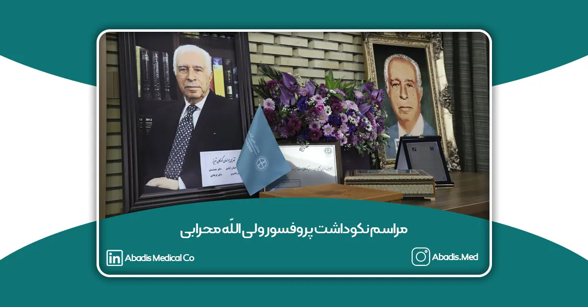
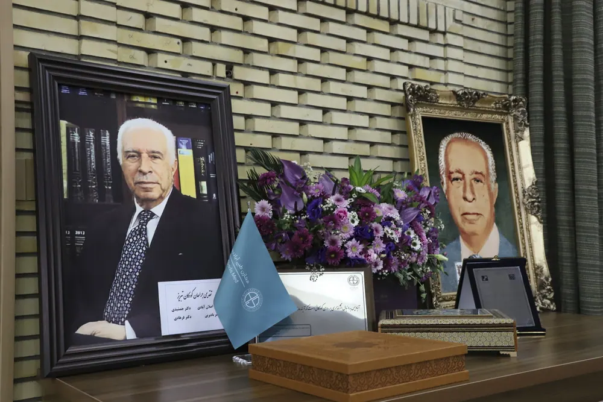
دکتر ولی الله محرابی می فرماید: ” آن که با دستش کار میکند یک خلاق، آن که با مغزش کار میکند یک عالم و آن که با قلبش کار میکند یک هنرمند است و جراح کسی است که دست، مغز و قلبش را به کار میگیرد تا به کمک انسانی بیاید.”
دکتر ولی الله محرابی در سال ۱۳۱۶ در منطقه ای سرسبز به نام سلمبار چشم به جهان گشود. او برای ورود به دانشکده پزشکی دانشگاه تهران در امتحانات ورودی شرکت نمود؛ ولی آرزوی ورود به دانشکده پزشکی تحقق نیافت؛ و برای تحصیل در رشته پزشکی عازم استانبول ترکیه شد. قبل از سوار شدن به اتوبوس به مقصد ترکیه، بار دیگر به جلوی سر در دانشگاه تهران رفت و با خود عهد بست اگر امروز به عنوان «دانشجو»به دانشگاه تهران وارد نشد؛ روزی به عنوان «استاد» وارد این مکان مقدس خواهد شد. وی تحصیلات پزشکی خود را در ترکیه پشت سر گذاشت و بعد از فارغ التحصیلی به آلمان مهاجرت نمود و در مکتب بزرگترین جراحان آن زمان در بیمارستان سنت یوهانس بن در رشته جراحی عمومی و بیهوشی تحصیلات خود را تکمیل نموده و بعد از ٣۴ ماه به دانشگاه فرانکفورت رفته و در رشته تروماتولوژی تحصیلات خود را ادامه داد.
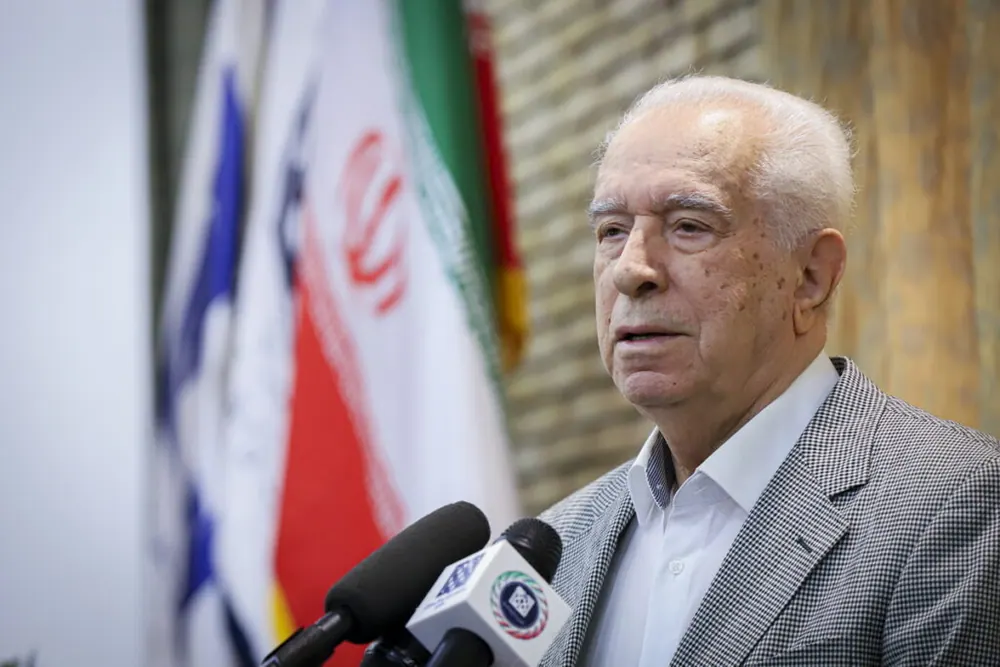
پروفسور ولی الله محرابی بنیان گذار جراحی اطفال در ایران، در سال 1359 نخستین آکادمی جراحی کودکان ایران را در بیمارستان فوق تخصصی کودکان بهرامی راه اندازی نمود. با همت عالی ایشان در دپارتمان فوق تخصصی رشته جراحی کودکان تا کنون 120 جراح کودک تربیت شده است.
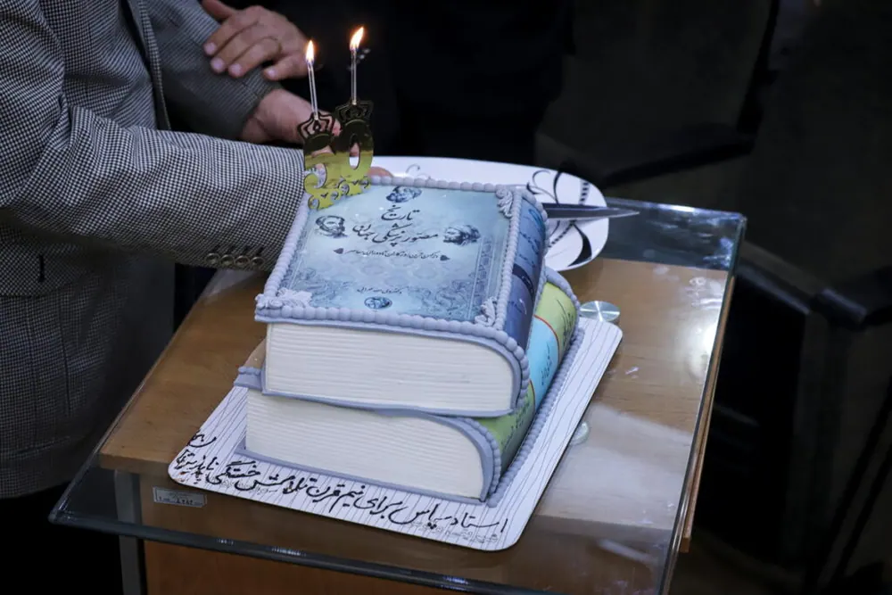
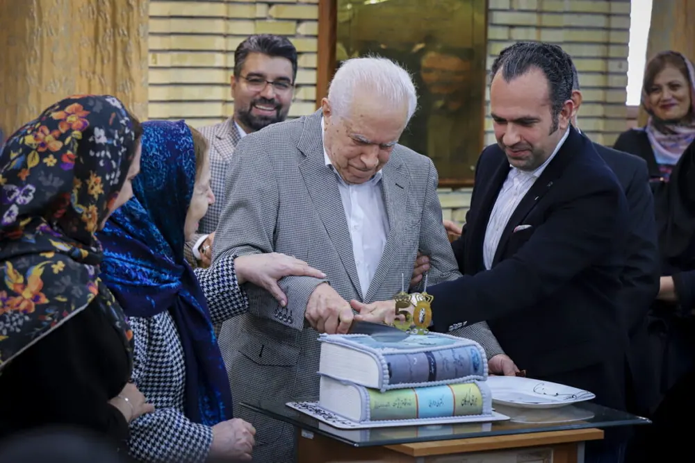
در کارنامه استاد جوایز و تقدیرنامه های بسیاری به چشم می خورد و لقب پدر جراحی کودکان به پاس خدمات ارزنده ایشان به ایشان اهدا گردیده است.
کتاب تاریخ مصور پزشکی در جهان در 10 جلد و کتاب جراحی کودکان حاصل سال ها تجربه گرانبهای دکتر محرابی است.
پرفسور محرابی در طول 50 سال خدمت خود با شعار همیشگی جراح باید قاضی وجدان خود باشد؛ ناجی بخش و امیدبخش زندگی بسیاری از کودکان و خانواده هایشان هستند.
از جمله مسئولیت های اجتماعی مجموعه آبادیس تجلیل و قدردانی از چهره های ماندگار است؛ بدین جهت شرکت دانش بنیان مخازن طبی آبادیس به عنوان حامی کودکان و چهرههای ماندگار پزشکی، در روز پنج شنبه 18 آبان 1402 در مراسم نکوداشت دکتر ولی الله محرابی به عنوان حامی پزشکان و کادر درمان حضور داشت؛ تا در راستای رسالت خود یعنی اثرگذاری قدم بردارد.
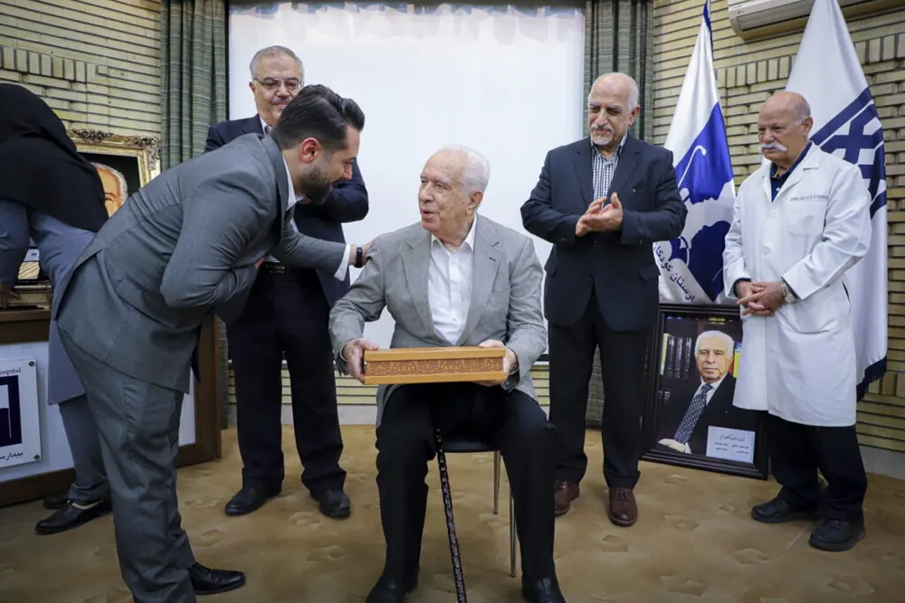
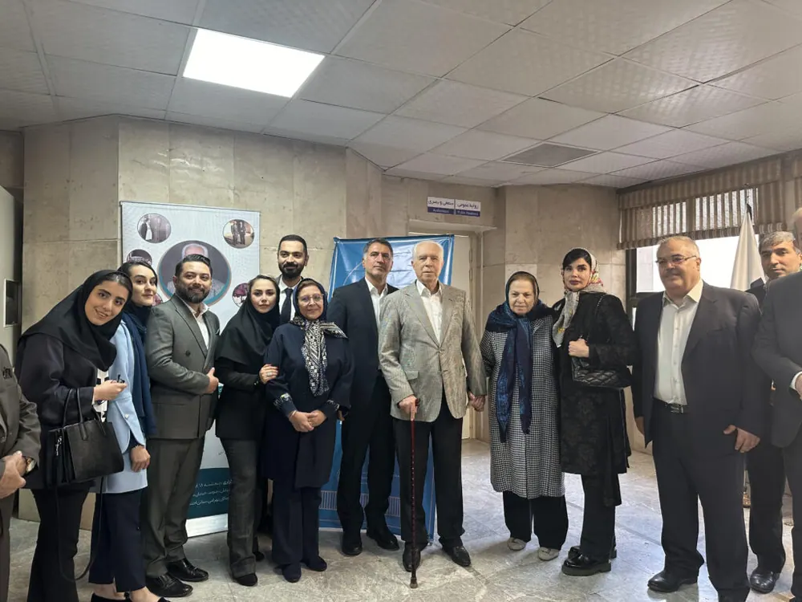
آبادیس در سالن اجتماعات دکتر فخرالدین قوامی بیمارستان کودکان بهرامی، به همراه اساتید و پیشکسوتان پزشکی گردهم آمد؛ تا از زحمات پرفسور ولی الله محرابی پدر جراحی اطفال ایران، تقدیر و تشکر کند.
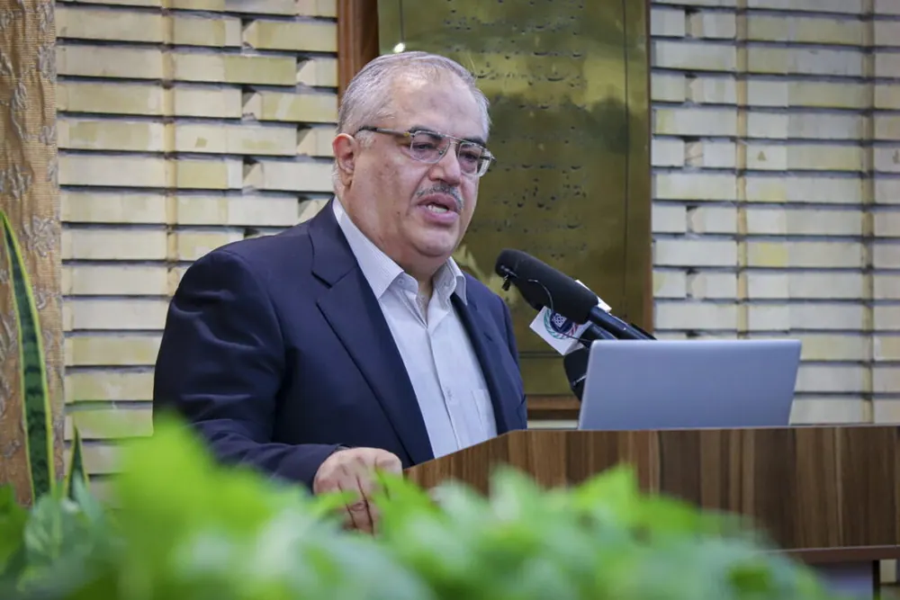
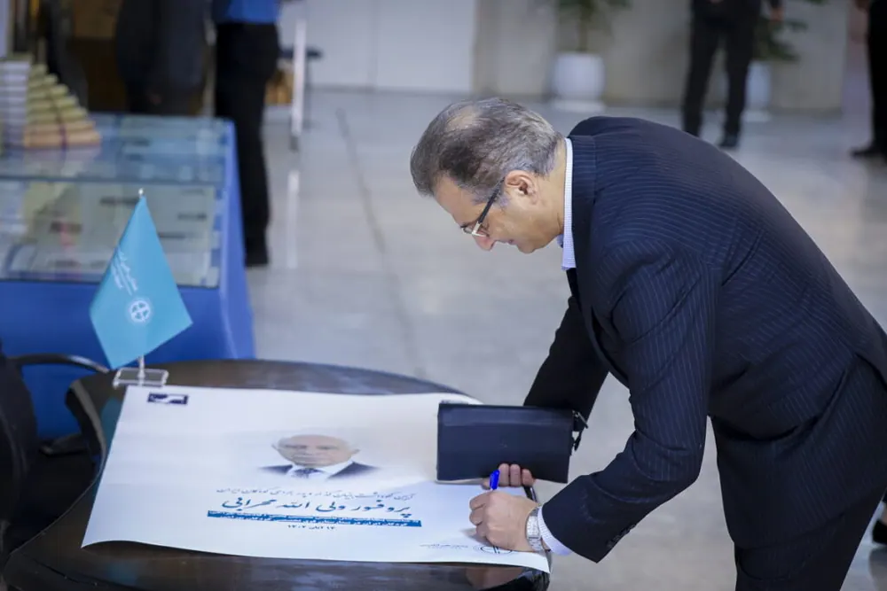
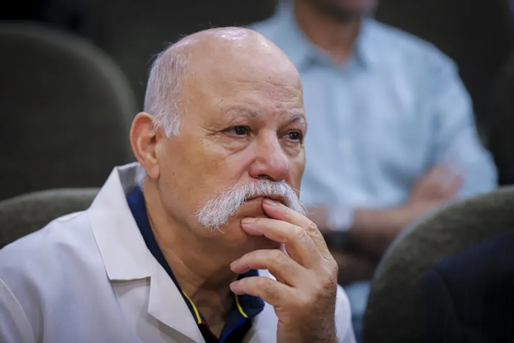
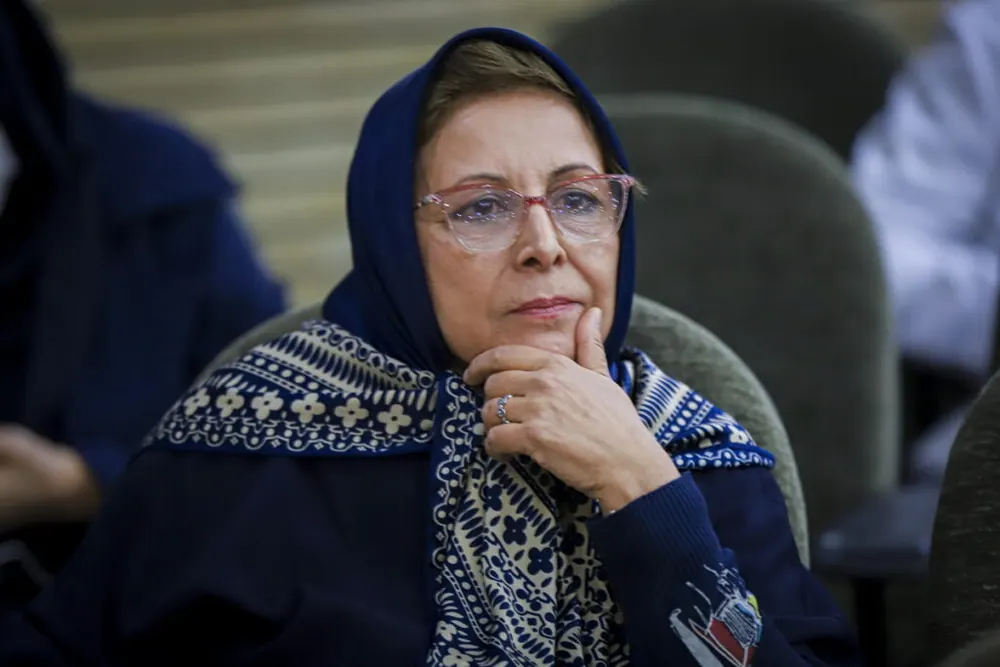
آبادیس شما را به تماشای بخشی از زندگینامه پرفسور ولی الله محرابی دعوت می کند.